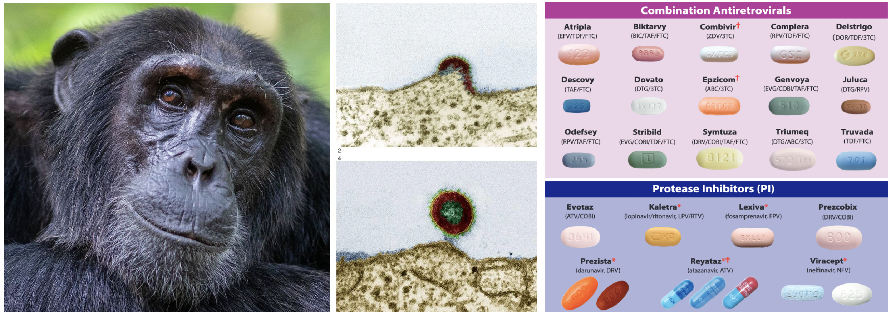
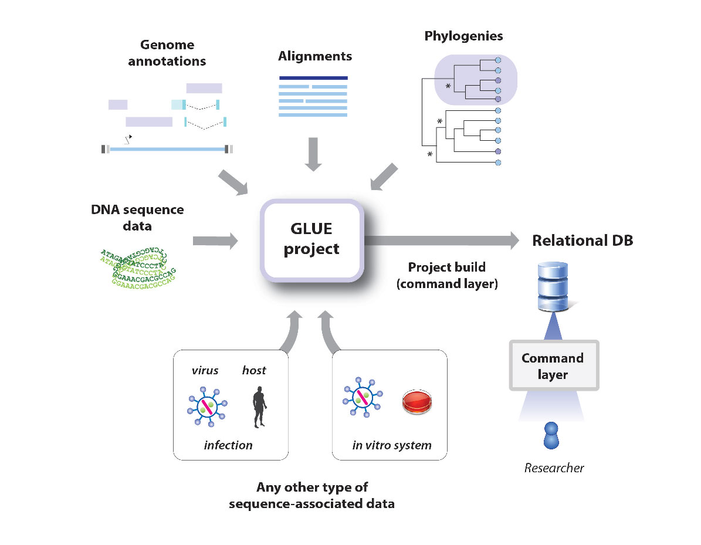
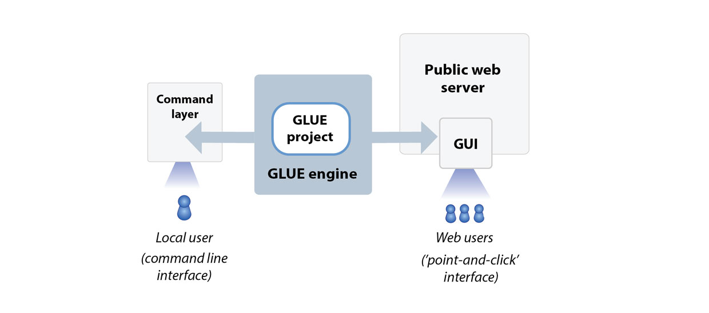

Comparative genomic analysis of lentiviruses using Lentivirus-GLUE
This is Lentivirus-GLUE, a GLUE project supporting comparative genomic and evolutionary analysis of lentiviruses (family Lentivirus). It contains a richly annotated sequence dataset for these viruses, comprised of both viral sequences and endogenous retroviruses (ERVs).
Lentiviruses (genus Lentivirus) are a distinctive genus of retroviruses (family Retroviridae) that cause chronic, persistent infections in mammals, including humans. They are best known as the genus of retroviruses that includes human immunodeficiency virus type 1 (HIV-1).

The pandemic HIV-1 M group is thought to have originated via zoonotic transfer from chimpanzees (left). HIV-1 infects human T-lymphocytes (middle) causing chronic, persistent infections . The development of combination antiretroviral therapy (right) has provided options for treatment of HIV infection. However, no cure exists and constant surveillance of antiretroviral drug resistance is required to preserve the effectiveness of current regimens, especially in resource-limited regions.
Since the emergence of the SARS-COV2 pandemic, many have become familiar with the use of virus genome data to track the spread and evolution of pathogenic viruses - e.g. via tools such as NextStrain. However, it is less widely appreciated that the same kinds of data sets and comparative genomic approaches can also be used to explore the structural and functional basis of virus adaptations.
The GLUE software framework provides an extensible platform for implementing computational genomic analysis of viruses in an efficient, standardised and reproducible way. GLUE projects can not only incorporate all of the data items typically used in comparative genomic analysis (e.g. sequences, alignments, genome feature annotations) but can also represent the complex semantic links between these data items via a relational database. This 'poises' sequences and associated data for application in computational analysis, minimising the requirement for labour-intensive pre-processing of datasets.
GLUE projects are equally suited for carrying out exploratory work (e.g. using virus genome data to investigate structural and functional properties of viruses) as they are for implementing operational procedures (e.g. producing standardised reports in a public or animal health setting).
Hosting of GLUE projects in an online version control system (e.g. GitHub) provides a mechanism for their stable, collaborative development, as shown below.

What is a GLUE project?
GLUE is an open, integrated software toolkit that provides functionality for storage and interpretation of sequence data.
GLUE supports the development of “projects” containing the data items required for comparative genomic analysis (e.g. sequences, multiple sequence alignments, genome feature annotations, and other sequence-associated data).

Projects are loaded into the GLUE "engine", creating a relational database that represents the semantic relationships between data items. This provides a robust foundation for the implementation of systematic comparative analyses and the development of sequence-based resources.

The core schema of this database can be extended to accommodate the idiosyncrasies of different projects, and GLUE provides a scripting layer (based on JavaScript) for developing custom analysis tools.
Some examples of 'sequence-based resources' built for viruses using GLUE include:
- COV-GLUE: A GLUE resource for tracking genetic variation in SARS-COV2. CoV-GLUE contains a database of amino acid replacements, insertions and deletions which have been observed in GISAID hCoV-19 sequences sampled from the pandemic
- RABV-GLUE: Tailored toward epidemiological tracking of rabies virus (RABV). Includes a database of RABV sequences and metadata from NCBI, updated daily and arranged into major and minor clades, and an analysis tool providing genotyping, analysis and visualisation of submitted FASTA sequences.
- HCV-GLUE: This GLUE resource aims to support analysis of drug resistance and vaccine escape in hepatitis C virus (HCV). A database of HCV sequences and metadata from NCBI, updated daily and arranged into clades (genotypes, subtypes). As well as pre-built multiple-sequence alignments of NCBI sequences, it includes an analysis tool providing genotyping, drug resistance analysis and visualisation of submitted FASTA sequences.
What does building the Lentivirus-GLUE project offer?
Lentivirus-GLUE offers a number of advantages for performing comparative sequence analysis of lentiviruses:
- Reproducibility. For many reasons, bioinformatics analyses are notoriously difficult to reproduce. The GLUE framework supports the implementation of fully reproducible comparative genomics through the introduction of data standards and the use of a relational database to capture the semantic links between data items.
- Reusable data objects and analysis logic. For many - if not most - comparative genomic analyses, data preparation is nine tenths of the battle. The GLUE framework has been designed to ensure that work spent preparing high-value data items such as multiple sequence alignments need only be performed once. Hosting of GLUE projects in an online version control system such as GitHub allows for collaborative management of important data items and community testing of hypotheses.
- Validation. Building GLUE projects entails mapping the semantic links between data items (e.g. sequences, tabular data, multiple sequence alignments). This process provides an opportunity for cross-validation, and thereby enforces a high level of data integrity.
- Standardisation of the genomic co-ordinate space. GLUE projects allow all sequences to utilise the coordinate space of a chosen reference sequence. Contingencies associated with insertions and deletions (indels) are handled in a systematic way.
- Predefined, fully annotated reference sequences: This project includes fully-annotated reference sequences for major lineages within the Lentivirus family.
- Alignment trees: GLUE allows linking of alignments constructed at distinct taxonomic levels via an "alignment tree" data structure. In the alignment tree, each alignment is constrained to a standard reference sequence, thus all multiple sequence alignments are linked to one another via a standardised coordinate system.
Some examples of the ways in which this GLUE resource can be used include:
- To perform comparative genomic studies across the family Lentivirus, e.g. as part of an investigation of lentivirus diversity.
- To facilitate in-depth comparative investigations of any virus species or group within the family Lentivirus.
- As a source of systematically organised information about endogenous retroviruses (ERVs) derived from lentiviruses.
Installing Lentivirus-GLUE
On computers with GLUE installed, the Lentivirus-GLUE project can be instantiated by navigating to the project folder, initiating GLUE, and issuing the following command in the GLUE shell:
Mode path: /
GLUE> run file buildLentivirusCoreProject.glue
This will build the Lentivirus-GLUE core project by executing the commands in
this file.
The Lentivirus project can be further extended to incorporate ERV sequences by executing the commands in this file, as follows.
Mode path: /
GLUE> run file buildLentivirusPaleoProject.glue
Related Publications
Singer JB, Thomson EC, McLauchlan J, Hughes J, and RJ Gifford
(2018)
GLUE: A flexible software system for virus sequence data.
BMC Bioinformatics
[view]
Zhu H, Dennis T, Hughes J, and RJ Gifford
(2018)
Database-integrated genome screening (DIGS): exploring genomes heuristically using sequence similarity search tools and a relational database.
[preprint]
Gifford RJ, Blomberg B, Coffin JM, Fan H, Heidmann T, Mayer J, Stoye J, Tristem M, and WE Johnson
(2018)
Nomenclature for endogenous retrovirus (ERV) loci.
Retrovirology
[view]
Rihn, SJ, Wilson SJ, Loman NJ, Alim M, Bakker SE, Bhella D, Gifford RJ, Rixon FJ, and PD. Bieniasz.
(2013)
Extreme genetic fragility of the HIV-1 capsid.
PLoS Pathogens
[view]
Gifford RJ
(2012)
Viral evolution in deep time - Lentiviruses and mammals.
Trends in Genetics
[view]
Capomaccio S, Cappelli K, Cook RF, Nardi F, Gifford R, Marenzoni ML, and F. Passamonti
(2011)
Geographic structuring of global EIAV isolates: A single origin for New World strains?
Virus Research
[view]
Gifford RJ, Katzourakis A, Tristem M, Pybus, OG, Winters M, and RW. Shafer.
(2008)
A transitional endogenous lentivirus from the genome of a basal primate and implications for lentivirus evolution.
PNAS
[view]
Katzourakis A, Tristem M, Pybus OG, and RJ. Gifford (2007)
Discovery and analysis of the first endogenous lentivirus.
PNAS
[view]
Contributors
Robert J. Gifford (robert.gifford@glasgow.ac.uk)
License
This project is licensed under the GNU Affero General Public License v. 3.0.